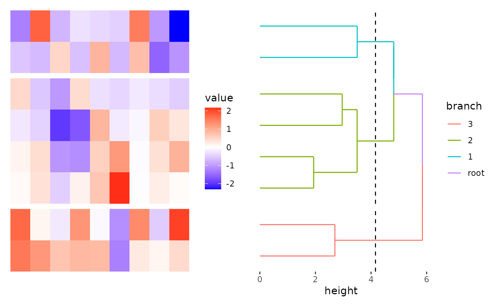

![[Experimental]](figures/lifecycle-experimental.svg)
The scheme_align() function defines the align Specifications for plots.
Arguments
- guides
A string with one or more of
"t","l","b", and"r"indicating which side of guide legends should be collected. Defaults towaiver(), which inherits from the parent layout. If no parent layout, all guides will be collected. IfNULL, no guides will be collected.- free_spaces
A string with one or more of
"t","l","b", and"r"indicating which border spaces should be removed. Defaults towaiver(), which inherits from the parent layout. If no parent, the default isNULL, meaning no spaces are removed.Usually you want to apply this with the whole layout, instead of individual plots.
- free_labs
A string with one or more of
"t","l","b", and"r"indicating which axis titles should be free from alignment. Defaults towaiver(), which inherits from the parent layout. If no parent layout, no axis titles will be aligned. IfNULL, all axis titles will be aligned.
Examples
set.seed(123)
mat <- matrix(rnorm(72), nrow = 8)
# used in the layout, define the default action for all plots in the layout
ggheatmap(mat) -
scheme_align(guides = NULL) +
anno_right() +
align_dendro(aes(color = branch), k = 3)
#> → heatmap built with `geom_tile()`

# You can also add it for a single plot
ggheatmap(mat) -
# for all plots in the layout, we default won't collect any guide legends
scheme_align(guides = NULL) +
# for the heatmap body, we collect guide legends in the right
# note, the guide legends will be collected to the right side of the
# layout which will overlap the legends in the right annotation
scheme_align(guides = "r") +
anno_right() +
align_dendro(aes(color = branch), k = 3)
#> → heatmap built with `geom_tile()`
# to avoid overlapping, we can also collect the guide legends in the
# right annotation
ggheatmap(mat) -
scheme_align(guides = NULL) +
scheme_align(guides = "r") +
anno_right() +
align_dendro(aes(color = branch), k = 3) +
scheme_align(guides = "r")
#> → heatmap built with `geom_tile()`